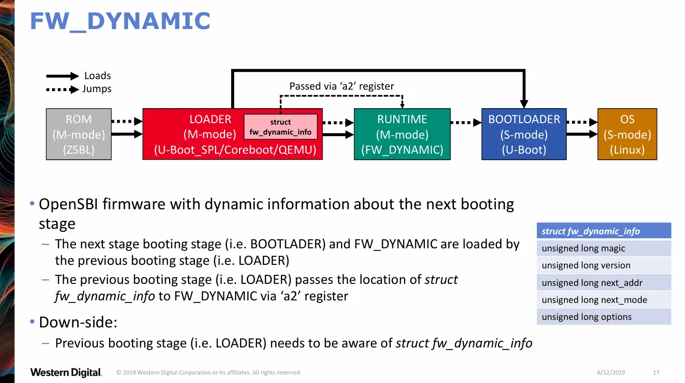

Lab 0: Linux 内核调试¶
Estimated time to read: 9 minutes
请先阅读 OS 实验导读
代码、报告提交 DDL
（仅验收）暂定第三周(2025-09-30)
实验简介¶
在 Lab 0 中，我们将学习下列内容，完成环境搭建：
- 使用 Docker 容器：为了避免同学们在不同操作系统和环境下遇到各种各样的问题，我们将实验环境打包成 Docker 容器镜像，免去同学们自行搭建环境的麻烦。
- 使用 QEMU 模拟器：同学们使用的一般是 x86-64 或 Arm 架构的设备，而本课程实现的内核使用 RISC-V 汇编指令和 C 语言编写。我们将使用 QEMU、Spike 等虚拟机、模拟器来模拟 RISC-V 架构的计算机系统，由它们提供对应的 CPU、内存、外设等环境，供我们运行和调试内核。
- 使用交叉编译工具链：特定架构上的编译器等工具一般只生成对应架构的二进制文件，生成其他架构的二进制文件的过程称为交叉编译。RISC-V GNU Compiler Toolchain 支持在 x86-64 或 Arm 架构的机器上编译、调试 RISC-V 架构的程序。
- 使用 GDB 调试器：在内核开发过程中，调试是必不可少的环节。我们将使用 GDB 来调试内核代码，定位和修复问题。
实验要求¶
本实验非常简单，无需写代码，无需提交报告。
后续实验的文档会提供尽可能详细的指导，但你仍有很多问题需要回到原始文档、标准规范中仔细求证。为了锻炼同学们阅读文档解决问题的能力，我们适当删减了本实验的指导，而是给出了一些原始文档链接，要求同学们寻找答案。
验收时，请你现场演示使用 QEMU 启动内核，并使用 GDB 打断点、查看各类信息。
如果你有兴趣，请阅读 附录 1：Spike 工具链，在验收时展示使用 Spike 运行的结果。
考点
本文档中标记为考点的方块是希望同学们能掌握的知识点，会在验收时提问。
Part 1：环境配置¶
安装 Docker¶
如果你尚未安装 Docker：
- Linux 和 WSL 环境请参考 Docker CE | ZJU Mirror
- macOS 推荐使用 Docker Desktop 或 OrbStack (可以用 Homebrew 直接安装)
克隆代码仓库¶
在 OS 实验导读 中，你已经了解了 Git 工作流。现在执行第一步，克隆代码仓库。
WSL 用户请不要将代码存放在 Windows 目录下
WSL 用户应该了解：Linux 和 Windows 的文件系统不同，文件权限、换行符、链接、大小写等方面都存在区别。
WSL 将 Windows 目录挂载到了 /mnt/c 等路径下，这只是为文件互访提供便利。官方并不建议你将文件存放在一边，又在另一边使用。首先性能较低，其次代码仓库等对文件权限、链接等有要求的项目很容易出问题。
请 WSL 用户将代码仓库克隆到 WSL 的 Linux 文件系统中（比如 /home/<username>/ 下），以避免出现各种奇怪的问题。
启动开发容器¶
关于本课程使用的容器，请同学们了解一下几点：
-
基本概念：我们发布镜像（image），同学们在本地拉取（pull）镜像，然后用镜像创建容器（container），容器是镜像的一个运行实例。
容器可以看作一个轻量级的虚拟机，可以启动、停止、删除。容器内的文件系统和运行状态是独立的，删除容器会丢失容器内的文件和状态。
-
代码挂载：代码库会被挂载（mount）到容器内的
/zju-os/code目录下。这意味着宿主机和容器共享代码库的文件，容器内对代码的修改会直接反映到宿主机上，反之亦然。文件保存在宿主机，所以不会因为容器被删除而丢失。 -
用户与文件权限：容器内的用户是
root，而宿主机上你一般使用的是普通用户。容器内创建的文件（比如编译产物等）属于root，在宿主机上操作时可能遇到权限问题。此时可以执行下面的命令将文件所有者转交回普通用户： -
Git 和 SSH 配置映射：
特别地，执行一些 Git 操作也会产生文件，因此会产生这样的情况：在容器内执行 Git 操作后，在宿主机执行 Git 操作遇到 Permission Denied。所以我们将宿主机的 Git 和 SSH 配置映射到容器内，这样同学们的开发、Git 操作都在容器内进行，不用回到宿主机了。
配置映射是通过挂载宿主机的
~/.gitconfig、~/.ssh等文件实现的。因此请先在宿主机上配置好 Git 和 SSH（在上面你拉取仓库的时候应该已经配置好了），否则我们的检测脚本会报错。
你有以下几种方式使用开发容器：
VSCode、CLion 等现代编辑器/IDE 大多支持 DevContainer。通过代码仓库下的 .devcontainer 目录中的配置文件，编辑器/IDE 可以自动创建并连接到容器，保证所有开发者使用相同的容器环境。
下面以 VSCode 为例介绍使用流程：
- VSCode 安装 Dev Containers 插件
- VSCode 打开实验仓库
-
右下角可能会出现开发容器（Dev Container）相关的弹窗，点击在开发容器中打开
如果没有弹窗，则 Ctrl+Shift+P，输入
reopen找到Dev Containers: Reopen in Container选项，选择它Tip
VSCode 是从当前打开的文件夹找
.devcontainer的，所以请确保 VSCode 当前打开了实验仓库的根目录。如果选择
Reopen in Container后 VSCode 弹出了选择容器之类的窗口，说明你没有打开正确的目录。 -
VSCode 将重载窗口，启动并连接到容器，自动完成插件安装等配置步骤
Tip
实验镜像比较大（约 10G），你可以结合自己的网速评估一下需要的拉取时间，耐心等待。
右下角应该会有弹窗表示开发容器正在启动，你可以点击查看日志了解启动进度。
实验代码库根目录下的 Makefile 将相关 Docker 命令封装成了 Makefile 目标：
-
make：创建并启动容器Ctrl+D 退出并关闭容器，此时你在容器内的更改会被保存，下次
make进入容器时可以继续使用 -
make clean：删除容器如果你不小心搞坏了容器内的环境，运行该命令清除，然后重新
make运行一个新的容器 -
make update：拉取最新的镜像如果课程群有通知容器更新，运行该命令，注意它会先执行
make clean删除旧容器
$ make
docker compose create
docker compose start
[+] Running 1/1
✔ Container zju-os Started 0.3s
docker compose exec -it zju-os /usr/bin/fish
Welcome to fish, the friendly interactive shell
Type help for instructions on how to use fish
root@zju-os /zju-os/code#
Tip
将 Docker 命令封装为 Makefile 目标仅仅是为了让常用操作更简便，不用打一长串命令。建议你自行学习 Makefile 中的命令含义，以便日后遇到问题时知道该怎么做。
更多资料
- 如果你不了解 Docker：What is a Container? | Docker
compose.yml描述了容器的运行参数：Compose file reference | Docker DocsDockerfile描述了容器镜像是如何构建的：Dockerfile reference | Docker Docs- 本课程的
Dockerfile：tool/container/Dockerfile at main · ZJU-OS/tool - 容器内默认使用
fish，这是一个比bash更友好的 shell，提供开箱即用的历史纪录、自动补全显示等功能：fish shell
Part 2：Linux 内核编译与调试¶
使用交叉编译工具链¶
也许你接触过下列编译器工具：
它们对应的交叉编译工具带有格式为 <目标架构>-<系统>-<套件名>- 的前缀。比如 Linux 系统上用于交叉编译 RISC-V 64 架构的 GNU 工具前缀为 riscv64-linux-gnu-，使用方式与原版相同。以 GCC 为例：
root@zju-os-code /z/code# riscv64-linux-gnu-gcc hello.c -o hello
root@zju-os-code /z/code# file hello
hello: ELF 64-bit LSB pie executable, UCB RISC-V, RVC, double-float ABI, version 1 (SYSV), dynamically linked, interpreter /lib/ld-linux-riscv64-lp64d.so.1, BuildID[sha1]=963fa6ea0ba96c8e9b928927d0e0306355e326d5, for GNU/Linux 4.15.0, not stripped
请你用 C 写一个 Hello World 程序，然后执行下面的步骤：
- 生成它的 RISC-V 汇编代码
- 将其编译为 RISC-V 可执行程序
- 将 RISC-V 可执行程序反汇编
考点
上面的步骤分别使用了哪几个工具？
更多资料
- GNU 二进制工具文档，介绍了实验中会用到的相关工具：Binutils - GNU Project - Free Software Foundation
- Coreutils - GNU core utilities
编译本地架构内核¶
容器内的 /zju-os/linux-source-* 是预先放置好的 Linux 内核源码：
在容器中编译内核的基本流程如下：
root@zju-os /zju-os# cd linux-source-6.16
root@zju-os /z/linux-source-6.16# make defconfig
root@zju-os /z/linux-source-6.16# make -j$(nproc)
...
LD vmlinux
NM System.map
...
BUILD arch/x86/boot/bzImage
Kernel: arch/x86/boot/bzImage is ready (#1)
root@zju-os /z/linux-source-6.16# make distclean
上面的日志是 x86-64 架构的内核编译输出。其他架构的输出可能不一样，比如笔者的 macOS（arm64）上输出结尾如下：
总之，只要 Make 没有报 Error，一般就说明构建成功了。此时文件夹中应该有我们需要两个重要的产物：
arch/<arch>/boot/Imagevmlinux
考点
- 运行
make help，了解上面运行的defconfig、distclean等 target 的含义 - 如何开启构建过程的详细输出？当构建失败时，你很可能需要查看详细的编译命令
Image和vmlinux是什么？有什么异同？
更多资料
- 内核发行说明：kernel.org/doc/Documentation/admin-guide/README.rst
- Debian 发行版内核手册：Chapter 4. Common kernel-related tasks
- Linux 内核的构建系统十分复杂，如果你有兴趣了解：Linux Kernel Makefiles — The Linux Kernel documentation
交叉编译 RISC-V 架构内核¶
请阅读这篇简明的文档 Embedded Handbook/General/Cross-compiling the kernel - Gentoo wiki，了解内核交叉编译的步骤。
考点
- 使用哪两个变量来指定目标架构？这两个变量的值在哪里找？
- 如何在命令行中为
make指定变量的值？
请你使用交叉编译工具链编译 RISC-V 架构的内核。如果看到 Kernel: arch/riscv/boot/Image is ready 这一行，说明成功构建出了 RISC-V 架构的内核。使用 file 命令来验证它是否为 RISC-V 架构的内核：
root@zju-os /z/linux-source-6.16# file arch/riscv/boot/Image
arch/riscv/boot/Image: Linux kernel RISC-V boot executable Image, little-endian
root@zju-os /z/linux-source-6.16# file vmlinux
vmlinux: ELF 64-bit LSB executable, UCB RISC-V, RVC, soft-float ABI, version 1 (SYSV), statically linked, BuildID[sha1]=657ad614b9ebd9723a2d5ee0a25505df3a43b918, not stripped
使用 QEMU 运行 RISC-V 内核¶
回到代码仓库，使用 make run 启动 QEMU，运行构建好的内核：
buildroot 默认用户为 root，密码为空。你可以登录 Shell，试试这个极简的 RISC-V 系统能干些什么（它应该能联网）：
buildroot login: root
# pwd
/root
# uname -a
Linux buildroot 6.16.3 #1 SMP Fri Sep 12 03:45:12 UTC 2025 riscv64 GNU/Linux
# wget http://www.baidu.com
Connecting to www.baidu.com (223.109.82.16:80)
saving to 'index.html'
index.html 100% |********************************| 2381 0:00:00 ETA
'index.html' saved
接下来学习 QEMU 操作：
-
现在与你交互的是 QEMU 自带的终端复用器（Terminal Multiplexer）
- 它连接着 QEMU Monitor 和虚拟机的控制台（Console），默认情况下连接后者。
- Ctrl+A 再按 C 可以在两者间切换。
- Ctrl+A 再按 H 可以查看帮助。
- Ctrl+A 再按 X 可以退出 QEMU。
像这里的 Ctrl+A 这样的前导组合键在终端复用器（如 tmux）中被称为逃逸键（escape key）。初始状态下，其他所有按键都会被直接传递给当前连接的终端。当你按下逃逸键时，终端复用器会进入「其自身的」命令模式，等待你输入后续的命令键。
-
QEMU Monitor 可以控制、查看、调试虚拟机。
它与下文介绍的 GDB 各有所长：QEMU Monitor 可以查看内存映射、TLB 等各类系统信息，而 GDB 专注于程序调试，主要是查看和控制代码运行。在后续实验中，如果你的代码有问题，可能导致 GDB 无法调试，而 QEMU Monitor 仍然可以使用。
你可以在 Monitor 中运行
help查看支持的命令。QEMU 10.1.0 monitor - type 'help' for more information (qemu) help ... x /fmt addr -- virtual memory dump starting at 'addr' (qemu) info mem vaddr paddr size attr ---------------- ---------------- ---------------- ------- 000055556ae09000 0000000081055000 0000000000001000 r-xu-a- (qemu) info registers CPU#0 V = 0 pc ffffffff80b57780 mhartid 0000000000000000 mstatus 0000000a000000a0 hstatus 0000000200000000
考点
使用 QEMU Monitor 进行下列操作：
- 查看寄存器、内存树、设备树、物理内存中的值
- Linux 第一条指令位于物理内存
0x80200000，打印这条指令
Tip
仅有一个内核镜像是无法运行系统的，你还需要一个根文件系统（root filesystem），其中包含了 Linux 启动后需要的各种文件，例如执行你输入的指令的 Shell 程序。容器内预置的 /zju-os/rootfs.ext2 就是一个已经构建好的根文件系统镜像。
更多资料
- QEMU System 手册：QEMU User Documentation — QEMU documentation
- QEMU Monitor 手册：QEMU Monitor Commands — QEMU documentation
rootfs.ext2制作方法：FOSDEM 2019 - Buildroot for RISC-V
QEMU 启动过程¶
当你按下电脑的电源键，计算机开始按照下面的流程启动：
-
固件加载（Firmware）
- 在主板 ROM 中烧录的固件（如 BIOS 或 UEFI）会首先被加载到内存中执行。
- 固件会完成 硬件自检（Power-On Self Test，POST），检测 CPU、内存、外设等是否可用，并进行基础初始化。
- 接着，它会寻找合适的启动设备（如硬盘、U 盘、网络等），然后将 引导程序（Bootloader）加载到内存并执行。
-
引导程序（Bootloader）阶段
该阶段不是必要的，固件可以直接引导进入内核。如果有多个操作系统，则引导程序可以提供选择界面。
- 引导程序的任务是把系统带入可以运行内核的状态。
- 典型的引导程序如 GRUB 或 U-Boot 会加载内核镜像（Kernel Image）和 根文件系统（Root File System）。
- 加载完成后，控制权会被转交给内核，开始执行内核入口点的代码。
-
内核启动（Kernel Boot）
- 内核会初始化内存管理、设备驱动、进程调度等核心功能。
- 初始化完成后，内核会启动 第一个用户空间进程（通常是
/sbin/init或systemd），进一步完成系统服务和登录界面的启动。 - 最终，用户可以登录系统，进入正常的操作环境。
具体到本课程：
- QEMU 提供模拟的 RISC-V 硬件环境（CPU、内存、外设等）
- OpenSBI 内置在 QEMU 中，作为 RISC-V 架构的默认固件，它运行在 RISC-V M-Mode
- 因为系统简单没有引导程序，固件直接启动内核，内核运行在 RISC-V S-Mode
整体流程如下图所示：
{kind=link}

让我们结合输出信息来看
...
____ _____ ____ _____
/ __ \ / ____| _ \_ _|
| | | |_ __ ___ _ __ | (___ | |_) || |
| | | | '_ \ / _ \ '_ \ \___ \| _ < | |
| |__| | |_) | __/ | | |____) | |_) || |_
\____/| .__/ \___|_| |_|_____/|____/_____|
| |
|_|
Firmware Base : 0x80000000
Domain0 Next Address : 0x0000000080200000
Domain0 Next Arg1 : 0x0000000087e00000
Domain0 Next Mode : S-mode
...
[ 0.000000] Booting Linux on hartid 0
[ 0.000000] Linux version 6.16.3 (root@zju-os-code) (riscv64-linux-gnu-gcc (Debian 15.2.0-3) 15.2.0, GNU ld (GNU Binutils for Debian) 2.45) #1 SMP Fri Sep 12 03:45:12 UTC 2025
- QEMU 作为 Loader
- 将 OpenSBI 加载到内存中的
0x80000000 - 将 Linux 内核加载到内存中的
0x80200000
- 将 OpenSBI 加载到内存中的
- QEMU 内置的 OpenSBI 使用
FW_DYNAMIC模式- QEMU 将
next_addr等信息放在struct fw_dynamic_info结构体中，将该结构体的地址存放在a2寄存器中 - OpenSBI 读取该信息，了解下一步要怎么做，从日志中可以看到它下一步跳转到
next_addr即内核入口点地址，并调整特权级为next_mode即 S-Mode
- QEMU 将
Booting Linux on hartid 0是内核start_kernel()打印出的第一条日志
更多信息
- QEMU RISC-V 启动实现：qemu/hw/riscv/boot.c at master · qemu/qemu
- OpenSBI 详解：OpenSBI Deep Dive - RISC-V International
RISC-V 执行环境¶
请打开 RISC-V 非特权级手册，阅读：
你应该理解下列概念：
-
Hart（hardware thread）是抽象的执行资源，独立获取和执行指令。
因为有 Hart 这一层抽象，操作系统看到的情况也有可能与真实的硬件不同。比如，即使 CPU 只有单个物理核心，OpenSBI 这样的 SEE 也可以通过时间复用的方式，向上层提供多个 Hart。
-
RISC-V 执行环境接口（Execution Environment Interface, EEI）
- 描述程序运行的环境，包括：程序初始状态、异常、中断及环境调用的处理方式
- 例子：Linux ABI、RISC-V Supervisor Binary Interface (SBI)
- 实现方式：纯硬件、纯软件或软硬件结合。
- Bare-metal 平台：hart 直接由物理处理器线程实现，指令直接访问物理地址。
- RISC-V 操作系统：通过虚拟内存和时间复用，为用户提供多个用户级执行环境。
- RISC-V Hypervisor：为客操作系统提供多个 supervisor 级执行环境。
- 模拟器：如 Spike、QEMU、rv8，可在 x86 系统上模拟 RISC-V harts。
并且能理解上一节介绍的 QEMU 启动过程中，各个组件的角色：
- QEMU 作为模拟器，实现 RISC-V ISA，提供 RISC-V hart
- OpenSBI 作为固件，实现 SBI，提供 SEE
- Linux 作为操作系统，实现 Linux ABI，提供 AEE
这些抽象层次奠定了后续实验的整体框架，请务必理解。
考点
- 你实现的操作系统需要 SEE，你应该去查看哪个规范了解 SEE 的接口？
GDB 调试内核¶
现在需要打开两个终端，一个运行 QEMU，另一个运行 GDB 进行调试。你可以：
- 按 OS 实验导读#工具使用 的说明使用 VSCode Attach 到容器内，开多个终端窗口
- 在容器内使用 tmux 等终端复用工具。可参考 Tmux 使用教程 - 阮一峰的网络日志 或 Home · tmux/tmux Wiki。
- 在宿主机上打开两个终端窗口，均执行
make进入容器。
在其中一个终端运行 make debug，会看到 QEMU 命令执行后就停住了。在另一个终端运行 make gdb，GDB 自动连接到 QEMU 上，但因为什么命令都没执行，GDB 显示的内容全空：
┌─────────────────────────────────────────────────────────────┐
│ │
│ [ No Source Available ] │
│ │
└─────────────────────────────────────────────────────────────┘
┌─────────────────────────────────────────────────────────────┐
│ │
│ [ No Assembly Available ] │
│ │
└─────────────────────────────────────────────────────────────┘
remote Thread 1.1 (src) In: L?? PC: 0x1000
(gdb)
接下来，请你任选资料阅读：
了解下列命令的含义，并进行实操：
layout [Name]
start [Arguments]
break [Function Name]
break *[Address]
break [...] if [Condition]
continue [Repeat count]
stepi [Repeat count]
backtrace
finish
info register [Register name]
print [Expression]
x /[Length][Format] [Address expression]
quit
关于 gdb 脚本
当你运行 make gdb 启动调试时，它会首先执行 gdbinit 脚本，进行一些初始化设置，这避免了我们每次手动输入一些重复的命令。如果你想尝试更加“现代”的 gdb 调试，现在的 gdb 为我们提供了 Python API，我们可以更加方便地实现事件回调、调试状态访问、自定义打印等功能，也可以借助 Python 生态实现更丰富的自动化流程。未来的内核调试可能越来越复杂，你可以积极探索更多更好的调试方式。
在代码仓库中，你可以通过修改 GDB_INIT_SCRIPT 变量选择使用 gdbinit.py 替代 gdbinit 脚本：
考点
阅读 Makefile 和 gdbinit：
make run和make debug有什么不同？新增的选项含义是什么？- 你运行
make gdb时，脚本对 GDB 做了哪些设置？
使用 GDB 进行下列操作：
- 断点：设置断点、查看断点、删除断点
- 调试：单指令执行、逐过程执行、结束当前函数、继续执行
- 查看：汇编代码、函数调用栈、变量、寄存器值、内存中的内容
- 分屏：如何在汇编代码和交互命令行窗格之间切换
上一节我们了解了启动的详细过程，要求你使用 GDB 进一步了解：
- 在 OpenSBI 的起始处打断点，看看这时候
a2寄存器的值是多少；进一步，查看对应内存位置的值 - 在内核起始处打断点，看看这时候 Next Arg1 处的内存存放了什么内容
更多资料
- GDB 插件：gdb-dashboard